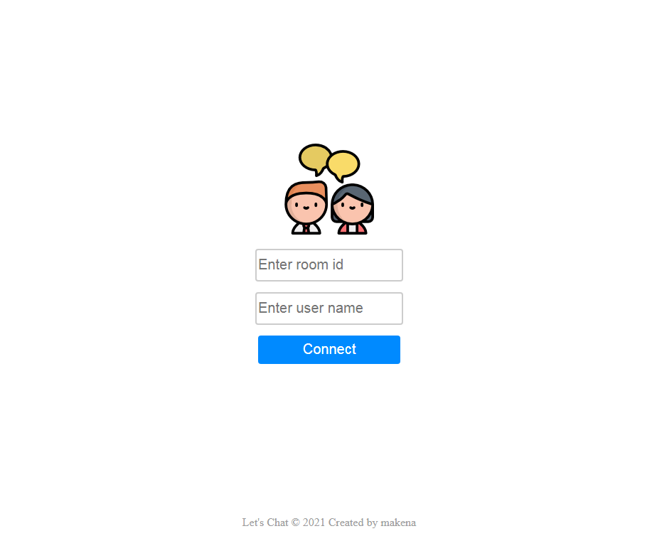
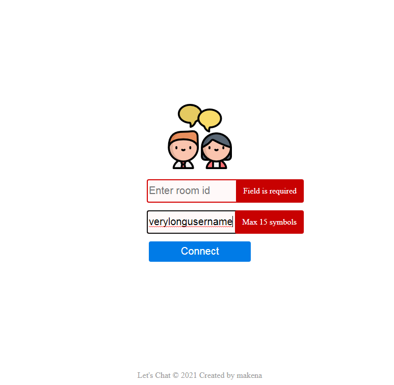
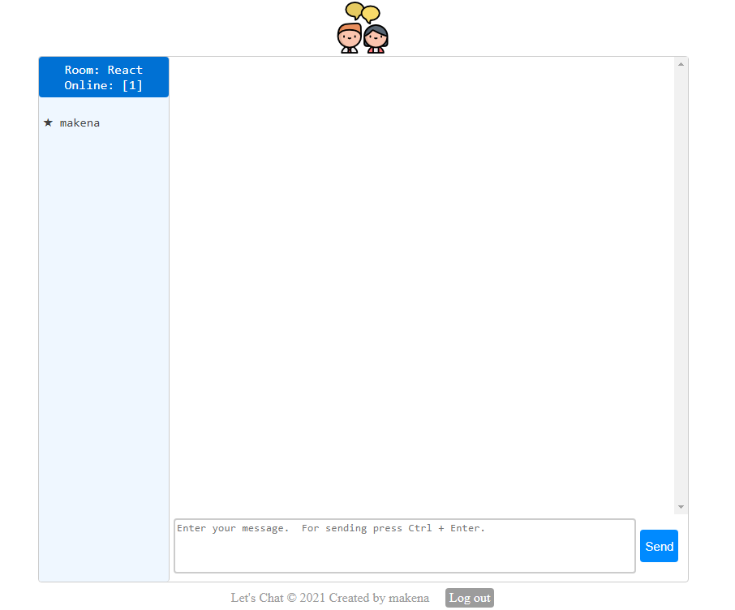
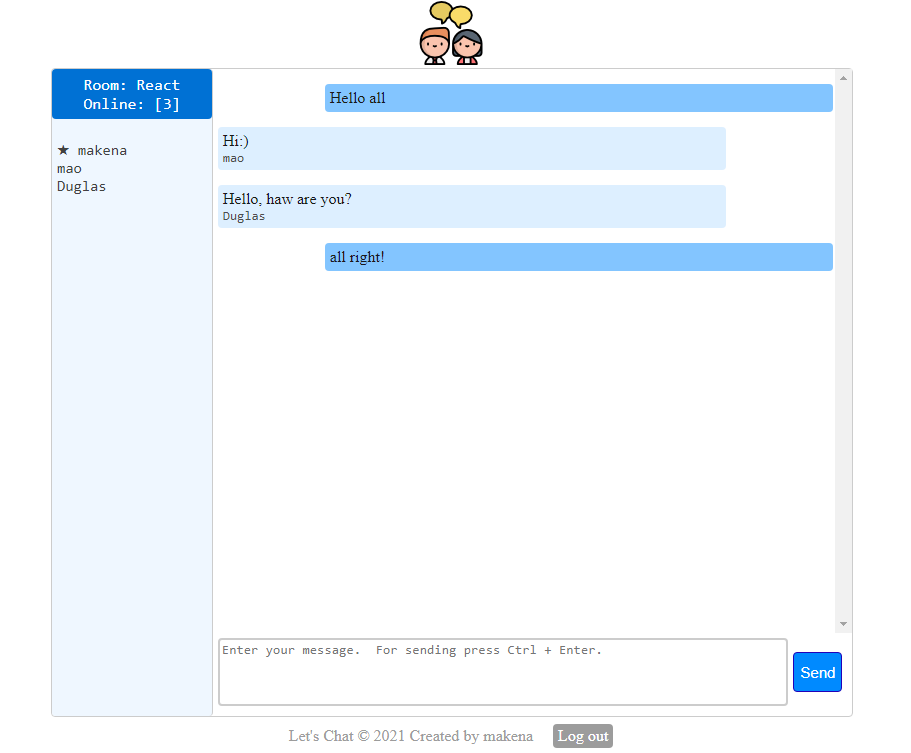
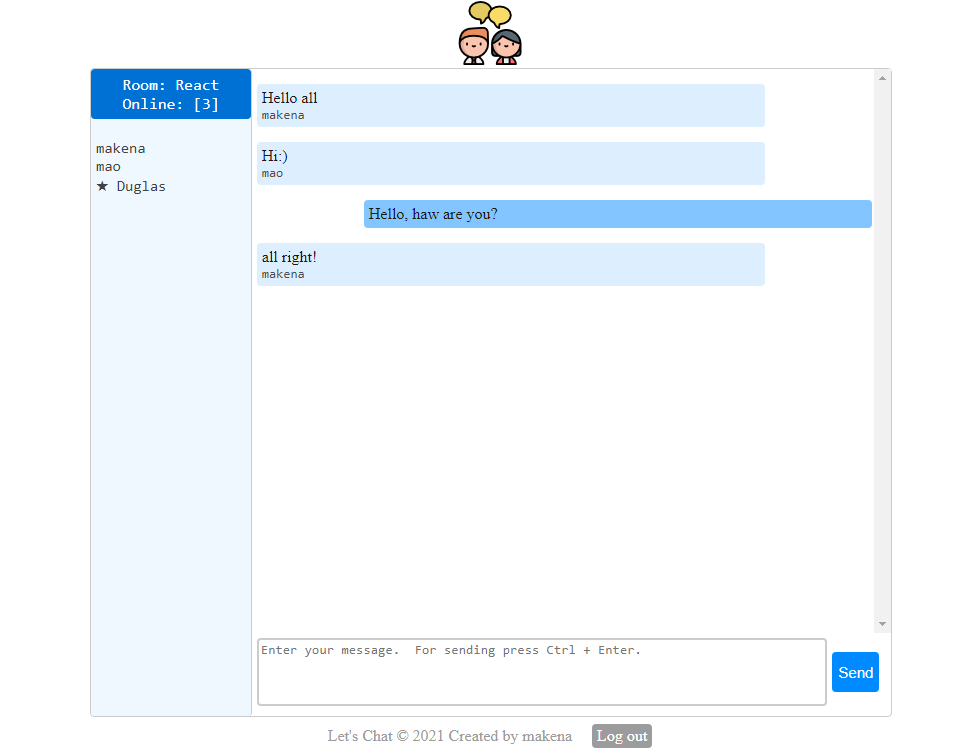

[#] Дописал функционал запроса и получения постов, надо сделать pagination и sidebar.
[#] Посмотрел 10. Вайтишный стрим - куда пропал, про планы, будет ли дальше контент
05.05.2021
[#] Написал фэйковый API, все отлично функционирует остается настроить визуал.
04.05.2021
[#] Продолжил написание BLL, добавил redux-thunk и React-Html-Parser, думаю за 2 дня закончу BLL.
[#] Посмотрел #06 Night Show by Dimych 2020-10-15
03.05.2021
[#] Начал написание BLL, добавил redux, react-redux, а также пришлось обновить модуль node-sass из-за обновления nodejs. Первым делом создал store, закомбайнил пока один) reducer, добавил селекторы и обернул провайдером всё приложение.
[#] Посмотрел Как запускать Node.js приложения на своем сервере VDS
02.05.2021
[#] Сегодня переустанавливал Windows. Перешел на 10-ку. Установил все нужные программы самых свежих версий [mongodb, nodejs] без проблем. Буду потихоньку привыкать)).
[#] А также сегодня купил второй монитор для более быстрой разработки.
[#] Надо продумать Архитектуру блога, и завтра продолжить разработку.
[#] Посмотрел #05 Night Show by Dimych 2020-10-08
01.05.2021
[#] Сегодня начал пробовать mongodb, но столкнулся с совместимостью с windows 7, завтра буду переходить на windows 10.
Итоги Апреля 2021 года [часов]: HTML & CSS [0], JavaScript [0], React.js [25], TypeScript [79], общие познания IT [20] => Всего [124]
30.04.2021
[#] Перевел всю верстку на React, а данные заHARDCODил, завтра уже буду заниматься BLL.
[#] Посмотрел #04 Night Show by Dimych 2020-09-30
29.04.2021
[#] Сделал рефакторин кода чата и выложил на Let's Chat - GitHub.
[#] Есть интерес развернуть чат на сервере, но придется заказать VPS. 2 мая оформлю VPS и буду пробывать сделать deploy.
[#] Посмотрел #03 Night Show by Dimych 2020-09-23
[#] Начал переписывать данный блог на React используя TypeScript. Makena blog react - GitHub. Если честно, стало напряжно обновлять блог, так как при добавлении новости надо делать сдвиг новостей вручную, а это на данный момент 9 страниц и они растут с каждым днем)) Буду реализовывать автоматизацию данного процесса!
[#] За сегодня добавил шапку и меню. Подключил и начал использовать SCSS.
28.04.2021
[#] Допилил чат! Завтра закину на GitHub, а сегодня только скриншоты.
Скриншоты Let's Chat





[#] Посмотрел #02 Night Show by Dimych 2020-09-16
[#] Ссылки на видео по которым был реализован Backend, Frontend реализовал с подключением доп. библиотек (Formik, uuid, Yup). Очень было интересно реализовывать Backend, так как это совсем другой мир ;)
#1: Разработка простого чата на ReactJS + NodeJS + Socket.IO (for Junior)
#2: Разработка простого чата на ReactJS + NodeJS + Socket.IO (for Junior)
27.04.2021
[#] Чат осталось немного допилить. Завтра точно доделаю!
[#] Посмотрел #01 Night Show by Dimych 2020-09-09